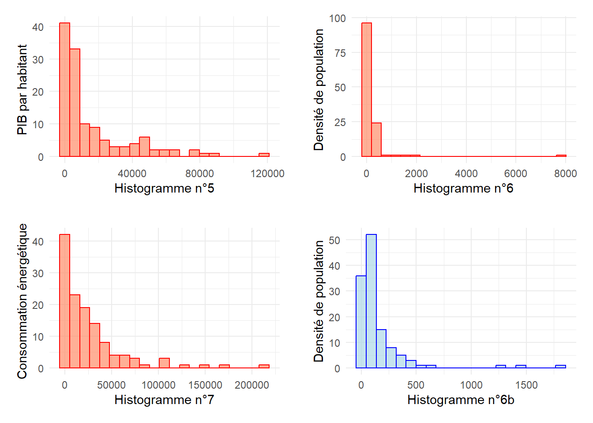
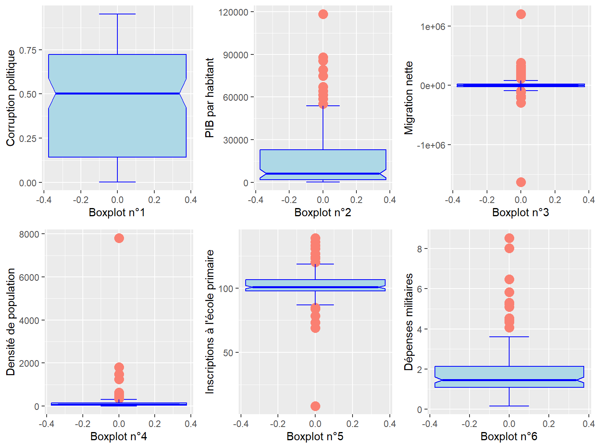
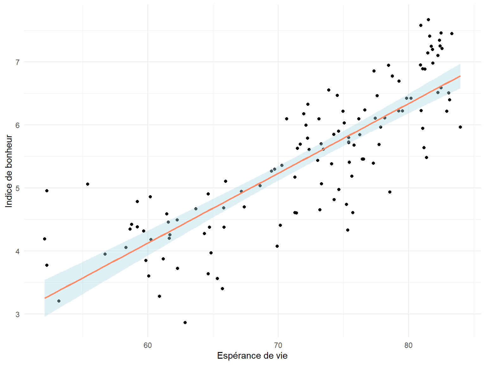
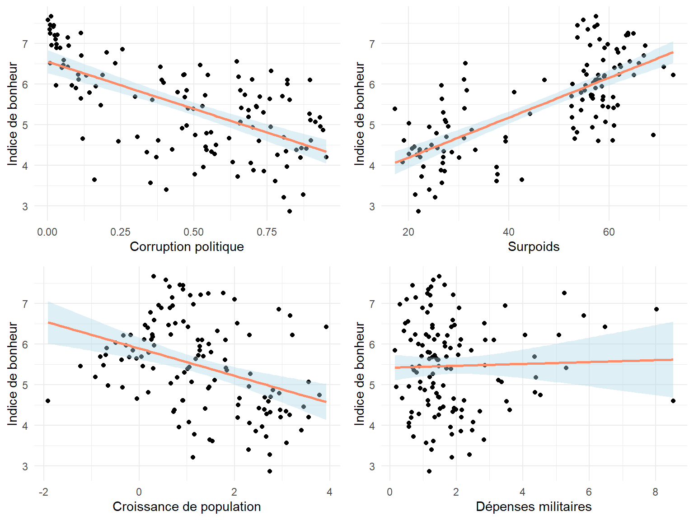
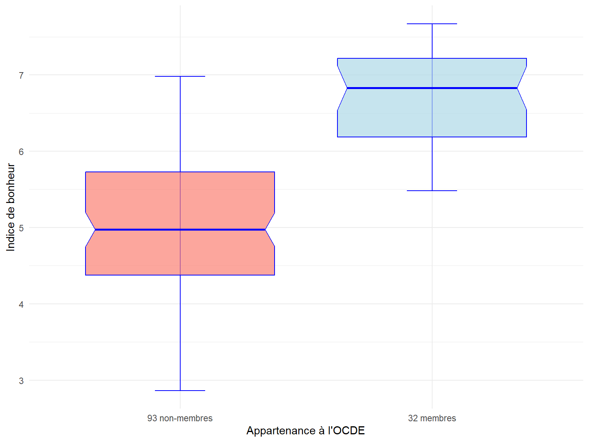

================================
Pays_perdus OCDE
--------------------------------
1 Bolivia 0
2 Comoros 0
3 Congo 0
4 Costa Rica 1
5 Côte d’Ivoire 0
6 DR Congo 0
7 Egypt 0
8 Gambia 0
9 Hong Kong SAR of China 0
10 Iceland 1
11 Iran 0
12 Iraq 0
13 Kosovo 0
14 Kyrgyzstan 0
15 Lebanon 0
16 Libya 0
17 Panama 0
18 Republic of Korea 0
19 Republic of Moldova 0
20 Saudi Arabia 0
21 Slovakia 0
22 State of Palestine 0
23 Taiwan Province of China 0
24 Türkiye 1
25 Venezuela 0
26 Yemen 0
--------------------------------La source du bonheur
GEINDRE Colin - JAOUEN Denis
Master 1 MAS - Université de Rennes et Master 1 MAS - Université Rennes 2
La rédaction de ce document s’appuie sur l’utilisation d’IA générative, ainsi que sur des blocs de codes fournit sur des forums comme medium ou stack overflow. Les auteur.ice.s de ces blocs sont remercié.e.s en fin de document.
Introduction
Sommes-nous heureux ? L’étions-nous plus auparavant ? Quels modèles de société sont les plus heureux ? Et surtout, quelle est la recette du bonheur ? Questions difficiles, mais qui revêtent une importance capitale pour chacun d’entre nous, notamment dans la recherche économique et sociale actuelle.
Le terme de “Bonheur National Brut” (ou en anglais “Gross National Happiness”) est apparu pour la première fois au Bhutan, à la fin des années 1970. Jigme Singye Wangchuck, alors roi du pays, déclare “Gross National Happiness is more important than Gross Domestic Product”, une phrase qui a influencé le développement de pays, engageant les politiques nationales et locales autour d’une approche holistique de la notion de progrès, moins centrée sur les marqueurs socio-économiques classiques.
Le GNHI, indice de bonheur national développé par le Bhutan, est maintenant utilisé dans de nombreux pays autours du monde. Il est construit sur un ensemble de marqueurs répartis dans 9 pôles considérés comme égaux.
En effet, depuis trop longtemps, l’indice de développement d’un pays a été calculé sur des indices économiques : PIB, croissance, taux d’emploi, etc. Ce choix n’est pas neutre, il sert un système particulier qui ne met pas l’humain ou l’environnement au coeur de ses priorités. Cependant, de plus en plus de sociologues et d’économistes préconisent d’ajouter à ces mesures des marqueurs de bien-être sociétal. Mais comment mesurer le bonheur ? Existe-t-il des bases de données sérieuses et fiables permettant de répondre à nos questions ?
Si le GNHI permet un classement selon un index de bonheur, il est déjà construit sur un postulat, celui que le bonheur est expliqué par un ensemble de facteurs socio-économiques définis. Si on veut démontrer ce postulat, on ne peut pas prendre le GNHI comme index de bonheur. Nous avons préféré étudier les résultats du World Happiness Report - de Gallup, étude annuelle construite sur un questionnaire utilisant des échelles de Cantril (la principale étant “Imaginez une échelle à 10 échelons, l’échelon 0 étant la pire vie que vous pourriez imaginer, le 10 la meilleure. Sur quel échelon êtes-vous actuellement ?”). D’autres études utilisent des échelles similaires, les échelles de Likert. On citera notamment l’Integrated Values Surveys, qui est celle avec la plus longue échelle de temps, mais que nous avons rejeté car le nombre de pays est plus restreint, et la formulation des questions a changé plusieurs fois. Les postulats sont alors plus simples, et on se mettra simplement d’accord sur le fait que :
La distance mentale entre les différentes réponses au questionnaire est stable, c’est à dire que nous pouvons faire des mathématiques dessus (calculer des moyennes, etc.). Nous supposons une échelle cardinale et pas simplement ordinale.
Le bonheur est autodéterminé de manière précise. Nous supposons que l’erreur d’auto-évaluation de son bonheur personnel est une variable aléatoire qui suit une distribution normale. Ainsi, il n’y a pas de biais qui, par exemple, pousserait les personnes malheureuses à s’estimer plus heureuses qu’elles ne le sont.
Ces hypothèses sont cohérentes avec la littérature scientifique, mais restent fortement débattues. En particulier, l’utilisation d’échelle cardinale plutôt qu’ordinale ne change que très peu les résultats des régressions, comme l’ont démontré plusieurs économistes (Ferris, 2002). Celle-ci est de plus intuitive, et grandement facilitante pour nos calculs. Par contre, il existe un effet plafond/plancher : il est plus difficile de passer de 9 à 10 que de 5 à 6 ; l’échelle n’est probablement pas cardinale dans les extrêmes. Nous faisons là une approximation consciente. La deuxième hypothèse, elle, est corroborée par la loi des grands nombres (les données de Gallup sont les plus fournies au monde), et par les différentes études sur les marqueurs de bonheur (taux de suicide, expressions faciales…), qui tendent à démontrer que les sujets ne mentent pas sur leur bonheur. Mais certaines cultures valorisent (latino-américaines) ou dévalorisent (Japon, Corée) socialement de se dire heureux, ce qui peut tirer les résultats vers le haut ou vers le bas. De plus, le tapis roulant hédonique, ou l’adaptation à ses conditions, ainsi que la désirabilité sociale qui pousse les répondants à paraître normaux aux yeux des enquêteurs, peuvent créer une homogénisation des résultats.
Pour contrer ces biais, on introduit parfois des effets fixes “pays”, comme les membres de l’OCDE, les pays Latino-américains, etc.
Un dernier problème que nous voulons aborder est celui de la barrière de la langue. Est-ce que tout le monde à la même perception du “bonheur”, ou est-ce que les mots, le langage utilisé pour définir cette notion change au point que la langue influence les réponses ? Mais de nombreuses études ont montré que l’on arrivait relativement bien à apprécier le bonheur des autres, quelque soit notre pays d’origine et celui de l’autre, impliquant que le bonheur revêt une définition globale relativement comprise partout (voir Sandvil, 1993 et Diner & Lucas, 1999).
Nous nous attendons à voir une corrélation entre l’indice de bonheur du WHR, et différents indicateurs socio-économiques. De plus, nous nous attendons a voir les biais culturels sus-cités.
Plan
- Introduction
- Cadre méthodologique
- Modèle de régression
- Corrections et transformations de variables
- Analyse des données
- Cadre des données
- Pré-traitement des données
- Données manquantes
- Suppression des doublons
- Recherche des outliers
- Transformation des données
- Analyses descriptives univariées
- Variables explicatives
- Variable cible
- Analyses descriptives multivariées
- Corrélations entre variables
- Analyse des interactions
- Résultats et discussion
- Modélisation principale
- Modélisation avancée et sélection de variables
- Diagnostics des résidus sur le modèle final
- Analyse des points influents
- Conclusion sur les corrections
- Conclusion
- Bibliographie
Cadre méthodologique
Le cadre méthodologique général est celui de la régression linéaire, avec une estimation des moindres carrés ordinaires. En fonction des données, des corrections éventuelles (white, MCG, etc.) pourront être envisagées. Pour chaque partie, une méthodologie plus précise sera discutée.
Modèle de régression
Voici la formulation mathématique du modèle linéaire estimé par moindres carrés ordinaires (MCO), en notation matricielle. \[ y = X\beta + \varepsilon \]
Dans notre cas, le modèle est formulé ainsi :
\[ \begin{align} Happiness &= \beta_0\\ &+ \beta_1 Political\_Corruption + \beta_2 GDP\_per\_capita + \beta_3 Lifespan\\ &+ \beta_4 Net\_Migration + \beta_5 Overweight\_Adults + \beta_6 Population\_density \\ &+ \beta_7 KWH\_pp\_pc + \beta_8 Military\_Expenses + \beta_9 Population\_Growth \\ &+ \beta_{10} Primary\_School\_Enrollment + \beta_{11} OCDE\\ &+ \varepsilon \end{align} \]
On estime alors les paramètres via la méthode des moindres carrés ordinaires : \[ \hat{\beta}_{MCO} = \operatorname*{arg\,min}\beta \sum{\varepsilon_i^2} = (X'X)^{-1}X'y \]
Cette méthode assume certaines hypothèses :
Linéarité : la relation entre les variables explicatives et la variable cible est linéaire (et la variable cible est continue).
Exogénéité : les variables explicatives ne sont pas corrélées avec le terme d’erreur, \(E(X'\varepsilon) = 0\).
Homoscédasticité : la variance des erreurs est constante, \(\operatorname{Var}(\varepsilon) = \sigma^2 I\).
Normalité : les résidus sont distribuées normalement, \(\varepsilon \sim \mathcal{N}(0, \sigma^2)\).
Absence d’autocorrélation des variables explicatives : les variables explicatives ne sont pas corrélées entre elles.
Absence d’autocorrélation des résidus, \(\operatorname{Cov}(\varepsilon_i, \varepsilon_j) = 0\) pour \(i \neq j\).
Sous homoscédasticité : \(\operatorname{Var}(\hat{\beta}_{MCO}) = \sigma^2 (X'X)^{-1}\)
En présence d’hétéroscédasticité, la variance générale s’écrit avec la matrice diagonale \(\Omega\), \((Var(\varepsilon)=\Omega)\) : \(\operatorname{Var}(\hat{\beta}_{MCO}) = (X'X)^{-1} X' \Omega X (X'X)^{-1}\)
Corrections et transformations de variables
On peut opérer des transformations de varibales pour que notre modèle soit plus explicatif ou plus robuste. En voici quelques exemples ainisi que leurs modèles correspondants :
- Modèle niveau - niveau : \(y_i = \alpha + \beta x_i + u_i\). Ici, β donne un effet absolu de x sur y.
- Modèle Log‑niveau : \(y_i = \alpha + \beta \log(x_i) + u_i\). Ici, β est la variation absolue de y pour une variation proportionnelle de x (approx. effet semi‑élasticité).
- Modèle Log‑log : \(\log(y_i) = \alpha + \beta \log(x_i) + u_i\). Ici, β représente l’élasticité, lepourcentage de y lorsque x varie de 1%.
- Modèle quadratique : \(y_i = \alpha + \beta_1 x_i + \beta_2 x_i^2 + u_i\). Permet de capturer des capturer des effets non‑linéaires comme les effets convexe ou concave.
- Modèle avec interaction : \(y_i = \alpha + \beta_1 x_i + \beta_2 D_i + \beta_3 (x_i \times D_i) + u_i\). Donne un effet de x différent selon la modalité D. On étudie les effets croisés de la même façon.
Analyse des données
Cadre des données
Nous avons tenté d’avoir le cadre le plus global possible. Ainsi nous tendons d’étudier les 147 pays référencés par le world happiness report. Après sélection de nos variables et traitement des données, il nous reste 125 pays à étudier.
Tableau 1 : Variables étudiées
| Code de la série | Définition | Unité | Source |
|---|---|---|---|
| Code | Le code du pays | Caractères | - |
| S | La moyenne de 2013 à 2023 d’un index de corruption politique allant de 0 à 1 | Index allant de 0 à 1 | World Bank |
| GDP_per_capita | La moyenne de 2013 à 2023 du PIB par habitant | En dollar américain par habitant | World Bank |
| Lifespan | La moyenne de 2013 à 202O de l’espérance de vie à la naissance | En années | World Bank |
| Net_Migration | La moyenne de 2013 à 2020 de la migration nette | En nombre de personnes | World Bank |
| Overweight_Adults | La moyenne de 2013 à 2016 de la proportion d’adulte de 18 ans et plus dont l’IMC est supérieur à 25. | En pourcentage | World Bank |
| Population_density | La moyenne de 2013 à 2021 de la densité de population en nombre d’habitant à la mi-année par kilomètres carrés | En habitant par kilomètre carré | World Bank |
| KWH_pp_pc | La moyenne de 2013 à 2023 de la consommation en kilowattheure par personne | En kilowattheure par personne | World Bank |
| Military_Expenses | La moyenne de 2013 à 2023 du pourcentage du PIB dédié à la dépense militaire | En pourcentage du PIB | Our World in Data |
| Population_Growth | La moyenne de 2013 à 2023 de la croissance en pourcentage de la population | En pourcentage | Our World in Data |
| Primary_School_Enrollment | La moyenne de 2013 à 2022 du nombre d’étudiant inscrits en école primaire divisé par la population du groupe d’age multiplié par 100 | En pourcentage | World Bank |
| OCDE | Une indicatrice avec 1 si le pays est membre de l’OCDE et 0 sinon | Indicatrice | OCDE |
| Happiness | La moyenne de 2013 à 2023 de l’indice du bonheur calculé par le World Happiness Index | Index allant de 0 à 10 | World Happiness Report |
Prétraitement et nettoyage des données
Ayant des données allant de 1789 à 2024, nous avons effectué des moyennes depuis 2013 et jusqu’à un maximum de 2023 sur toutes les données étudiées.
Cette approche nous donne deux avantages. Le premier est de récolter un maximum d’individus malgré un grand nombre de données manquantes. Le second est d’atténuer les tendances qui on pu se passer dans des temps plus courts sur cette décennie, limitant les individus aberrants dans nos données.
Intéressons nous brièvement aux 26 pays exclus par notre sélection de jeux de données :
Tableau 2 : Pays exclus par notre sélection de données
On voit premièrement la présence de territoires dont l’existence administrative ou l’indépendance est contestée avec Hong Kong, Taiwan, le Kosovo et la Palestine.
Parmi les 22 autres pays, on voit qu’on n’a pas exclusivement des pays pauvres, petits ou peu influents. Cependant, en observant la variable OCDE, on s’aperçoit qu’il n’y a que 13,6% de ces pays qui sont membres de l’OCDE alors que dans nos données restantes, 34,4% des pays sont membres.
On reconnait donc qu’on perd majoritairement des pays en développement et des pays du Sud global. Cela dit, rien ici ne nous permet, à première vue, de penser que ces pays affecteraient significativement notre modèle. On accepte de donc de tirer des conclusions générales malgré leur absence.
Analyse descriptive univariée des données
Voyons maintenant de plus près les données restantes que nous allons utiliser.
Tableau 3 : Statistiques descriptives des variables étudiées
===================================================================================
Statistic Mean St. Dev. Min Median Max
-----------------------------------------------------------------------------------
Political_Corruption 0.47 0.30 0.002 0.50 0.95
GDP_per_Capita 16,670.31 22,709.09 230.93 6,175.42 118,437.30
Lifespan 72.09 8.39 52.10 74.11 83.99
Net_Migration 8,166.03 201,494.10 -1,632,118.00 85.12 1,206,926.00
Overweight_Adults 45.86 16.31 17.38 54.40 72.78
Population_Density 211.95 729.00 1.99 80.05 7,814.10
KWH_pp_pc 25,913.75 35,190.72 224.22 15,016.75 213,333.10
Military_Expenses 1.89 1.46 0.16 1.46 8.53
Population_Growth 1.28 1.22 -1.91 1.14 3.93
Primary_School_Enrollment 101.71 13.83 8.45 100.72 138.91
Happiness 5.46 1.12 2.86 5.48 7.67
-----------------------------------------------------------------------------------On voit tout de suite, par comparaison de la moyenne et de la médiane de chaque variable, certaines tendances : le PIB par habitant contient des individus qui tirent la moyenne vers le haut, idem pour la migration, le KWH par habitant et la densité de population.
En étudiant les minimums, maximums, et écarts-type de ces quatre variables, on remarque qu’il ne s’agit probablement que de quelques individus dont les valeurs très fortes déforment les moyennes. Par exemple, la densité de population a une étendue de 7812, une médiane de 80 et un écart -type de seulement 65. On s’attend à observer dans ces variables des petits groupes d’individus aux valeurs très élevées.
Un effet inverse et de moindre importance peut aussi être constaté quand au surpoids des adultes. On voit que la moyenne est légèrement tirée en dessous de la médiane.
Les dépenses militaires ayant une moyenne légèrement plus élevée que la médiane et un écart-type faible malgré un maximum assez élevé, on s’attend à observer très peu d’individus avec des valeurs très élevées mais une concentration importante des individus autour de la médiane.
Le reste des variables ont l’air d’être peu dispersées. On peut s’atttendre à y voir une répartition normale des valeurs.
À présent, intéressons nous à la variable que l’on cherche à expliquer :

Figure 1 : Histogramme du score de bonheur

Figure 2 : Boxplot du score de bonheur
A première vue, la fig.1 semble difficilement suivre une loi normale. On repère cela à une certaine symétrie et une concentration d’indivus autour du centre, particulièrement deux pics : l’un proche de 4,5 et le second de 6.
La fig.2 présente une répartition très équilibrée de notre variable explicative. On n’y repère pas de tendances particulières si ce n’est que les deux quarts les moins heureux sont légèrement plus grands. On dénote l’absence d’individus aberrants : les valeurs sont toutes réparties de manière équilibrée.
Analyse de chaque variable explicative

Figure 3 : Histogrammes des variables ayant une distribution proche de la normale
Au vu de la symétrie de leurs histogrammes on peut considérer que la croissance de la population, l’inscription à l’école primaire, les dépenses militaires et la migration peuvent être proches de lois normales.

Figure 4 : Histogrammes des variables ayant une distribution décroissante
La consommation d’énergie, la densité de population et le PIB par habitant semblent suivre des lois inverses avec une importante concentration des individus dans les valeurs basses et de moins en moins d’individus ayant des valeurs élevées.
Dans l’histogramme de la densité de population (6), il y a un seul individu, à près de 8000 habitants par km carré : Singapour. On le retire un instant pour “zoomer” sur la fréquence des individus dans les valeurs les plus faibles (cf. 6b). On y voit que la répartition ne suit pas tout à fait une loi inverse puisque le pic de population n’est pas au début. On ne peut pas pour autant associer la densité de population à une loi normale, plutôt à une loi du Chi-deux.

Figure 5 : Histogrammes des variables ayant une distribution peu claire
Ces derniers histogrammes ne nous sont pas d’une grande utilité si ce n’est pour dire que la corruption politique, le surpoids et l’espérance de vie ne semblent pas suivre des lois classiques. Les nuages de point et les boxplots nous seront peut-être plus utiles pour analyser ces variables.
Cela dit, on visualise deux pics de surreprésentation (autour de 25 et 55) dans l’histogramme du surpoids (10) et une certaine absence des individus dans les valeurs moyennes (entre 30 et 50). On peut également voir une concentration des espérances de vie au delà de 70 ans (9).

Figure 6 : Boxplots des variables explicatives
On peut comparer ici une distribution équilibrée et espacée, celle de la corruption politique, avec des distributions très concentrées pour les boxplots 3 à 6 et une distribution inégale pour ce qui est du PIB par habitant.
Comme sur les graphes précédents (fig 3 et 4), on remarque une importante concentration des individus pour ce qui est de la migration, la densité de population et les inscriptions à l’école primaire. On visualise bien la concentration des pays les plus pauvres dans la moitié basse de boxplot du PIB par habitant qui nous a poussé à tester une transformation logarithmique.
Un affichage en boîte à moustache permet de repérer très facilement les outliers, les individus les plus aberrants qui referont surface dans les graphiques suivants :
On repère dans le boxplot de l’inscription à l’école primaire (fig 6 - Boxplot n°5) un individu atypique proche de 0, il s’agit de la Somalie avec moins de 9% d’inscrits.
De la même manière dans le boxplot de la densité de population (fig 6 - Boxplot n°4), on repère à nouveau Singapour avec une densité titanesque de près de 8000 habitants au km2.
Dans le boxplot de la migration (fig 6 - Boxplot n°3),, le Pakistan apparait tout en bas avec plus d’1,5 million de migration nettte négative et les Etats-Unis tout en haut avec plus d’1,2 million de migration nette positive.
Le Luxembourg est l’individu avec le PIB le plus élevé (fig 6 - Boxplot n°2).
Et le Qatar est l’individu tout à droite dans l’histogramme de la consommation énergétique (fig 4 - histogramme n° 7).
Analyse descriptive bivariée des données

Figure 7 : Corrélations des variables explicatives avec l’indice de bonheur
On remarque ici les variables les plus et les moins corrélées à l’indice du bonheur. L’espérance de vie, le PIB/hab, le surpoids et la consommation énergétique sont très corrélés positivement avec l’indice de bonheur tandis que la corruption politique et la croissance de population semblent elles être corrélées négativement.
Les autres variables sont peu ou très peu corrélées à l’indice de bonheur.
On va voir par la suite que ces corrélations se traduisent en relations linéaires avec des droites décroissantes pour les variables corrélées négativement et inversement. On verra aussi que les variables avec les plus petites corrélations ont les coefficients directeurs les plus faibles et inversement.

Figure 8 : Nuage de points entre l’espérance de vie et l’indice de bonheur
Premièrement, on remarque une bonne linéarité positive entre l’indice de bonheur et l’espérance de vie à la naissance, les points semblent bien décrire une droite. C’est notre variable la plus corrélée à l’indice de bonheur et, sans surprise, la mieux représentée linéairement.

Figure 9 : Nuages de points assez dispersés
Ensuite, nous avons trois variables qui ont une relation linéaire avec l’indice de bonheur mais dont les nuages de points sont très dispersés : la corruption politique, la croissance de population et le surpoids.
On remarque dans le nuage de point de la corruption politique un ensemble d’individus très proches, des pays heureux et peu corrompus qui ensemble ont un effet important sur la droite de linéarité et qui lui donne son aspect décroissant.
On remarque également les deux concentrations d’individus dans le graphe du surpoids, comme on pouvait l’apercevoir dans l’histogramme du surpoids (fig. 5).
Notre quatrième graphe représente les dépenses militaires : la variable la moins corrélée à l’indice de bonheur (fig. 6). Sans surprise, on ne voit pas de linéarité avec l’indice de bonheur, la droite est horizontale et le nuage de point est très dispersé bien qu’on aperçoive les quelques individus dont le budget alloué aux dépenses militaires est plus élevé.

Figure 10 : Nuages de points les plus concentrés avec et sans leurs individus les plus aberrants
Voyons maintenant les variables dont les individus sont très concentrés, mettant en évidence certains individus aberrants repérés plus tôt (figure 3 et 4) : les USA et le Pakistan pour la migration, Singapour pour la densité de population et la Somalie pour le taux d’inscription à l’école primaire.
Cela dit, ces individus ne sont pas mal projetés vis-à-vis des droites de relation linéaire avec l’indice de bonheur. Ils ne semblent pas avoir d’effet important sur leurs droites respectives. Seuls le Pakistan et la Somalie aplatissent légèrement leurs droites.
Leur unicité à cependant un effet très important sur leurs intervalles de confiance respectifs (indiqués en bleu clair. Le manque d’individu dans les extrémités des graphes créé un intervalle de confiance très large, ne nous permettant qu’une faible prévision quant à la relation entre la variable concernée et l’indice de bonheur.
Afin d’observer les nuages de points concentrés de plus près, nous avons retiré les individus aberrants susnommés dans les graphes aux points bleus. Comme on peut le voir, cela ne permet pas d’obtenir une linéarité claire de la relation entre l’indice de bonheur et les variables étudiées. Tout comme les dépenses militaires, ces variables ne semblent pas ou peu corrélées à notre score de bonheur et leur forte concentration d’individus complique toute étude visuelle du lien avec le bonheur.

Figure 11 : Nuages de points avec l’indice de bonheur des variables bénéficiant d’une transformation logarithmique et lesdites transformations
Enfin, nous nous intéressons à des transformations de variables dont les graphes initiaux ne donnaient pas une belle linéarité avec l’indice de bonheur. Le PIB/hab et la consommation énergétique ont une forte concentration des individus autour des valeurs faibles et quelques individus aux valeurs élevées décrivant originellement une relation plus logarithmique que linéaire.
Appliquer un logarithme au PIB par habitant et à la consommation énergétique permet un lien linéaire très clair avec l’indice de bonheur. La transformation resserre également l’intervalle de confiance, nous assurant d’une bonne relation linéaire. Cette réalisation nous indique que nous obtiendrons de meilleurs modèles en utilisant ces transformations logarithmiques plutôt que les variables originelles.

Figure 12 : Boxplot du bonheur en fonction de l’appartenance à l’OCDE
Le pays membre le moins heureux étant plus heureux que la majorité de pays non-membres, il est clair que les pays membres de l’OCDE ont un bonheur bien plus élevé que les non-membres. On s’attend donc à observer une certaine significativité de l’OCDE dans notre modèle.
Analyse et discussion des résultats
Modélisation principale
Nous allons commencer par comparer deux modèles. Le premier, que l’on appellera reglin, correspond à la régression linéaire complète, sans transformation de variable, et le deuxième reglog, à une régression avec une transformation par logarithme sur les variables modifiées en figure 11.
Tableau 4 : Résumés de reglin et reglog
==================================================================
Dependent variable:
-----------------------------------
Happiness
(1) (2)
------------------------------------------------------------------
Political_Corruption 0.32 (0.26) 0.51** (0.26)
KWH_pp_pc 0.0000 (0.0000)
GDP_per_Capita 0.0000*** (0.0000)
log(KWH_pp_pc) 0.06 (0.10)
log(GDP_per_Capita) 0.38*** (0.12)
Lifespan 0.06*** (0.01) 0.04*** (0.01)
Net_Migration -0.0000 (0.0000) -0.0000 (0.0000)
Overweight_Adults 0.02*** (0.005) 0.01* (0.005)
Population_Density -0.0000 (0.0001) 0.0000 (0.0001)
Military_Expenses -0.09** (0.04) -0.09** (0.04)
Population_Growth 0.04 (0.05) 0.13*** (0.05)
OCDE1 0.40** (0.17) 0.44*** (0.16)
Primary_School_Enrollment -0.01** (0.003) -0.01* (0.003)
Constant 0.76 (0.85) -1.41* (0.80)
------------------------------------------------------------------
Observations 125 125
R2 0.81 0.83
Adjusted R2 0.79 0.81
Residual Std. Error (df = 113) 0.51 0.49
F Statistic (df = 11; 113) 44.23*** 49.40***
==================================================================
Note: *p<0.1; **p<0.05; ***p<0.01Nos deux modèles expliquent plus de 80% de la variance de l’indice de bonheur. Cependant, le modèle avec transformation logarithmique (reglog) a un R² ajusté légèrement supérieur, ce qui indique une meilleure capacité explicative.
Nos variables significatives, par ordre de significativité, sont l’espérance de vie, le surpoids, le PIB par habitant, la dépense militaire, la participation à l’OCDE et l’inscription à l’école primaire.
Modélisation avancée et sélection de variables
Nous partons du modèle logarithmique reglog qui semble le plus performant de par son meilleur R² ajusté.
Traitement de la multicolinéarité
Examinons les facteurs d’inflation de la variance (VIF) pour détecter une potentielle multicolinéarité entre les variables.
Tableau 5 : VIF des variables du modèle complet (reglog)
===============================
Variable VIF
-------------------------------
Political_Corruption 3.12
log(KWH_pp_pc) 13.01
log(GDP_per_Capita) 16.82
Lifespan 5.24
Net_Migration 1.20
Overweight_Adults 3.39
Population_Density 1.30
Military_Expenses 1.38
Population_Growth 1.59
OCDE 2.63
Primary_School_Enrollment 1.05
-------------------------------Analyse de la multicolinéarité : Les résultats indiquent une multicolinéarité sévère pour le PIB par habitant (16.82) et la consommation d’énergie (13.01), ainsi qu’une valeur limite pour l’espérance de vie (5.24). Bien que le PIB présente le VIF le plus élevé, il constitue la variable économique de référence. La consommation d’énergie (KWH_pp_pc) étant une proxy de l’industrialisation très corrélée au PIB, sa suppression est la correction logique pour réduire la redondance sans perdre l’information sur la richesse. Nous retirons donc KWH_pp_pc.
Tableau 6 : VIF des variables de reglog après suppression de la consommation d’énergie
==============================
Variable VIF
------------------------------
Political_Corruption 3.06
log(GDP_per_Capita) 7.50
Lifespan 5.06
Net_Migration 1.20
Overweight_Adults 3.29
Population_Density 1.29
Military_Expenses 1.20
Population_Growth 1.50
OCDE 2.43
Primary_School_Enrollment 1.05
------------------------------L’espérance de vie conserve un VIF problématique (>5) après cette suppression, elle pourrait également être écartée par la sélection automatique ci-après, mais nous choisissons de la conserver pour l’instant car elle représente la dimension “Santé” distincte de la “Richesse”.
Sélection de variables (Stepwise par AIC)
Nous utilisons une procédure de sélection pas à pas descendante (backward) basée sur le critère d’information d’Akaike (AIC) pour ne garder que les variables pertinentes.
Tableau 7 : Résumé du modèle optimisé par AIC
=====================================================
Dependent variable:
---------------------------
Happiness
-----------------------------------------------------
Political_Corruption 0.545** (0.248)
log(GDP_per_Capita) 0.438*** (0.076)
Lifespan 0.042*** (0.011)
Overweight_Adults 0.008* (0.004)
Military_Expenses -0.081** (0.033)
Population_Growth 0.118*** (0.043)
OCDE1 0.396*** (0.148)
Primary_School_Enrollment -0.007** (0.003)
Constant -1.484* (0.766)
-----------------------------------------------------
Observations 125
R2 0.827
Adjusted R2 0.815
Residual Std. Error 0.484 (df = 116)
F Statistic 69.122*** (df = 8; 116)
=====================================================
Note: *p<0.1; **p<0.05; ***p<0.01Ce modèle ne contient plus que les variables qui apportent une information significative au sens de l’AIC. C’est notre nouveau modèle de référence.
On constate l’absence de variables précédemment non significatives : la dépense militaire et la densité de population.
Test de non-linéarités et d’interactions
Il est fréquent en économie du bonheur d’observer des rendements décroissants (déjà capturé par le logarithme du PIB). Nous pouvons aussi tester si l’effet de la richesse dépend du niveau de développement avec l’interaction OCDE x PIB.
Testons un modèle avec cette interaction :
Tableau 8 : Résumés du modèle final et du modèle avec interaction
=========================================================================
Dependent variable:
-----------------------------------------------
Happiness
(1) (2)
-------------------------------------------------------------------------
Political_Corruption 0.545** (0.248) 0.560** (0.247)
log(GDP_per_Capita) 0.438*** (0.076) 0.400*** (0.080)
Lifespan 0.042*** (0.011) 0.043*** (0.011)
Overweight_Adults 0.008* (0.004) 0.010** (0.005)
Military_Expenses -0.081** (0.033) -0.076** (0.033)
Population_Growth 0.118*** (0.043) 0.106** (0.044)
OCDE1 0.396*** (0.148) -1.835 (1.537)
Primary_School_Enrollment -0.007** (0.003) -0.006* (0.003)
log(GDP_per_Capita):OCDE1 0.219 (0.150)
Constant -1.484* (0.766) -1.298* (0.772)
-------------------------------------------------------------------------
Observations 125 125
R2 0.827 0.830
Adjusted R2 0.815 0.816
Residual Std. Error 0.484 (df = 116) 0.482 (df = 115)
F Statistic 69.122*** (df = 8; 116) 62.275*** (df = 9; 115)
=========================================================================
Note: *p<0.1; **p<0.05; ***p<0.01Tableau 9 : Test d’anova entre le modèle final et celui avec interaction
Modèle Final:
Happiness ~ Political_Corruption + log(GDP_per_Capita) + Lifespan + Overweight_Adults
+ Military_Expenses + Population_Growth + OCDE + Primary_School_EnrollmentModèle avec Interaction :
Happiness ~ Political_Corruption + log(GDP_per_Capita) + Lifespan + Overweight_Adults
+ Military_Expenses + Population_Growth + OCDE + Primary_School_Enrollment
+ log(GDP_per_Capita)*OCDE
==========================================
Res.Df RSS Df Sum of Sq F Pr(> F)
------------------------------------------
1 116 27.164
2 115 26.670 1 0.493 2.127 0.147
------------------------------------------Analyse de l’interaction : Le test ANOVA compare le modèle avec et sans l’interaction OCDE * GDP. La p-value obtenue (0.147) est supérieure au seuil standard de 0.05. Cela signifie que l’ajout du terme d’interaction n’améliore pas significativement la qualité du modèle. L’hypothèse selon laquelle l’importance du PIB sur le bonheur différerait significativement entre les pays de l’OCDE et les autres n’est pas validée statistiquement par nos données.
Choix du modèle final
Compte tenu des résultats précédents, nous retenons le modèle issu de la sélection Stepwise sans le terme d’interaction comme notre modèle final expliquant l’indice de bonheur.
Diagnostics des résidus sur le modèle final
Vérifions maintenant la validité des hypothèses des MCO (citées en introduction) sur notre modèle final : best_model.
Tableau 10 : Tableau de synthèse des diagnostics
====================================================
Test Statistique P_Value
----------------------------------------------------
Breusch-Pagan (Homoscédasticité) 5.1320 0.7434
Shapiro-Wilk (Normalité) 0.9880 0.3435
Durbin-Watson (Indépendance) 1.8850 0.2697
----------------------------------------------------Interprétation des diagnostics : Les tests sont concluants et valident toutes les hypothèses des Moindres Carrés Ordinaires :
Homoscédasticité validée : Le test de Breusch-Pagan (p-value = 0.7434) ne rejette pas l’hypothèse nulle. La variance des résidus est constante.
Normalité validée : Le test de Shapiro-Wilk (p-value = 0.3435) confirme que les résidus suivent une loi normale. L’inférence statistique (t-tests, intervalles de confiance) est donc fiable.
Indépendance validée : Le test de Durbin-Watson (p-value = 0.2697) ne détecte pas d’autocorrélation significative.
Visualisation des diagnostics

Figure 13 : Diagnostics visuels des résidus
Analyse visuelle : Les graphiques confirment la robustesse du modèle.
Résidus vs Ajustés : Le nuage de points est dispersé aléatoirement autour de 0 sans forme marquée, ce qui corrobore l’homoscédasticité.
Q-Q Plot : Les points s’alignent correctement sur la droite de normalité. On note quelques légers écarts aux extrémités correspondant à des pays comme Oman (résidu positif élevé) ou l’Afghanistan et le Botswana (résidus négatifs), mais ces outliers restent ponctuels et ne violent pas l’hypothèse de normalité globale.
Conclusion sur les corrections
Les diagnostics étant excellents, aucune correction (type White / HC1) n’est nécessaire. Nous pouvons interpréter directement les coefficients du modèle final.
Analyse des points influents
Nous complétons les diagnostics par une analyse des points influents (points leviers et outliers) qui pourraient biaiser l’estimation.

Figure 14 : Détection des points influents (Distance de Cook et Effet Levier)
Analyse des points influents : L’analyse de la distance de Cook met en évidence quatre pays : Oman, la Somalie, la Jordanie et le Botswana par ordre d’importance.
Distance de Cook : Bien que ces pays dépassent le seuil théorique de sensibilité (\(4/n \approx 0.03\)), aucune observation ne s’approche du seuil critique de 0.5 ou 1. Ils influencent le modèle sans le déstabiliser.
Levier vs Résidus : La Somalie se distingue par un fort effet de levier (probablement dû à sa valeur extrême en scolarisation, ou des valeurs manquantes trop lissées par notre pré traitement), mais son résidu reste modéré. Oman, le Botswana et la Jordanie ont des résidus plus importants, suggérant que le modèle explique moins bien leur niveau de bonheur spécifique. On peut supposer qu’il existe dans leurs cas des facteurs géopolitiques ou culturels non capturés par notre modèle.
En conclusion, bien que ces pays atypiques existent, ils ne remettent pas en cause la validité globale du modèle.
Tableau 11 : Résultats finaux du modèle économétrique
=====================================================
Dependent variable:
---------------------------
Happiness
-----------------------------------------------------
Political_Corruption 0.545** (0.248)
log(GDP_per_Capita) 0.438*** (0.076)
Lifespan 0.042*** (0.011)
Overweight_Adults 0.008* (0.004)
Military_Expenses -0.081** (0.033)
Population_Growth 0.118*** (0.043)
OCDE1 0.396*** (0.148)
Primary_School_Enrollment -0.007** (0.003)
Constant -1.484* (0.766)
-----------------------------------------------------
Observations 125
R2 0.827
Adjusted R2 0.815
Residual Std. Error 0.484 (df = 116)
F Statistic 69.122*** (df = 8; 116)
=====================================================
Note: *p<0.1; **p<0.05; ***p<0.01Conclusion et discussion
Notre analyse visait à déterminer les déterminants du bonheur (“Happiness”) à travers une régression linéaire multivariée sur un échantillon de 125 pays.
Résultats principaux :
- Richesse et Santé : Le PIB par habitant (en log) et l’espérance de vie sont les déterminants les plus puissants et positifs du bonheur. La relation logarithmique confirme que l’utilité marginale du revenu est décroissante : gagner 1000$ de plus apporte plus de bonheur dans un pays pauvre que dans un pays riche.
- Facteurs institutionnels : La corruption politique a un impact négatif significatif, tandis que l’appartenance à l’OCDE est souvent associée à un niveau de bonheur supérieur, toutes choses égales par ailleurs.
- Interaction non significative : Nos tests n’ont pas permis de valider statistiquement que l’effet de la richesse diffère significativement selon le niveau de développement (appartenance à l’OCDE). Le modèle simple reste le plus performant.
- Robustesse et Points influents : Les diagnostics (homoscédasticité, normalité) sont satisfaisants. L’analyse des points influents a identifié la Somalie (fort levier) et Oman (résidu élevé) comme des cas particuliers, mais leur impact reste limité et ne biaise pas les conclusions générales.
- Limites du modèle : Bien que les diagnostics soient globalement satisfaisants, des limites inhérentes aux données transversales subsistent.
Limites et Perspectives :
Causalité : La corrélation n’implique pas la causalité. Est-ce que les gens heureux sont plus productifs (augmentant le PIB) ou l’inverse ?
Variables omises : La culture, le climat, ou la liberté politique (différente de la corruption) pourraient jouer un rôle important.
Données manquantes : L’exclusion de certains pays (Somalie, etc.) pour manque de données peut biaiser les résultats (biais de sélection).
Perspectives : Pour aller plus loin, une analyse en panel (longitudinale) permettrait de contrôler les effets fixes par pays (culture, géographie) et de mieux saisir la dynamique temporelle du bonheur. L’ajout d’indicateurs d’inégalité (Gini) serait également pertinent.
Bibliographie
- Easterlin, R. A. (1974). “Does Economic Growth Improve the Human Lot? Some Empirical Evidence”. Nations and Households in Economic Growth.
- Gallup World Poll. Methodology for the World Happiness Report.
- Kanto Fiaferana, Cours de régression linéaire
- Quarto, Quarto
- Ludovic C. & mathandy, StackExchange
- Esteban Ortiz-Ospina, Max Roser (2013, last update: 2024). Happiness and life satisfaction
Sources des données : - World Happiness Report (Happiness Score) - World Bank (GDP, Lifespan, Corruption, etc.) - Our World in Data (Energy, Military, Population)
Utilisation d’outils d’intelligence artificielle : - GPT-mini-o5 - Gemini 3 Pro